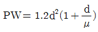
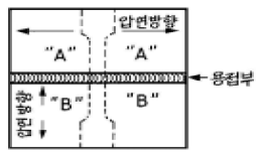
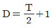
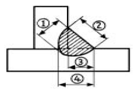

방사선비파괴검사산업기사(구) (2005-03-20 기출문제)
1과목: 방사선투과검사 시험
1. 다음 중 방사선투과검사용 Ir-192 γ선 피폭에 의한 인체 영향과 관계없는 것은?
- 흡수선량
- 피폭범위
- 유효반감기
- 선량율
(정답률: 알수없음)

2. 방사선투과사진 필름의 자동현상기를 이용한 현상에서 반드시 거치지 않아도 좋은 과정은?
- 현상처리
- 정지처리
- 정착처리
- 수세처리
(정답률: 알수없음)
3. 다음 중 시험체의 주변에 압력차를 유발하여 검사하는 비파괴검사법은?
- X선 회절법
- 중성자 투과검사법
- 와전류탐상검사법
- 누설 검사법
(정답률: 알수없음)
4. 방사선 투과사진 콘트라스트에 대한 설명으로 옳지 않은 것은?
- 필름콘트라스트는 방사선의 파장 및 분포와 관련이 있다.
- 투과사진의 두 영역사이의 농도차를 말한다.
- 피사체 콘트라스트와 필름콘트라스트에 영향을 받는다.
- 피사체 콘트라스트는 시험체의 두 부분을 투과한 방사선의 강도비를 말한다.
(정답률: 알수없음)
5. 방사선 흡수선량 1 그레이(Gy)에 해당되는 단위로 맞는 것은?
- 100rem
- 100rad
- 100Sv
- 100coulomb
(정답률: 알수없음)
6. 휴대용 X선 발생장치에 관한 설명 중 맞는 것은?
- 음극에 텅스텐 표적이 있다.
- 양극에 집속관이 있다.
- 필라멘트는 양극에 있다.
- 양극은 일반적으로 구리로 만든다.
(정답률: 알수없음)
7. 방사선투과검사로 균열을 검출할 때의 신뢰도는 균열감도와 선형 투과도계감도가 아래의 식으로 나타난다면 d가 1㎜ 이고 두께가 50㎜인 강판 맞대기용접부내에 존재하는 폭 0.5㎜인 균열이 방사선 투과사진에 나타나기 위하여는 균열의 길이가 얼마 이상이어야 하는가?

단, P와 W는 단위 길이의 균열의 깊이와 폭이며, d는 방사선투과사진에 나타나는 투과도계의 wire의 직경, μ는 투과사진의 불선명도이고 0.5mm라고 한다."- 3.6mm
- 7.2mm
- 9.0mm
- 12.0mm
(정답률: 알수없음)
8. X선 투과시험에 수반되는 유해 X선의 선량율에 관계되지 않는 것은?
- 관전압
- X선 발생장치
- 필름의 종류
- 시험체의 재질
(정답률: 알수없음)
9. 다음 중 비파괴검사법의 결함 검출원리로서 잘못된 것은?
- 방사선투과시험 - 투과 강도의 차이
- 초음파탐상시험 - 음압 반사율
- 침투탐상시험 - 표피효과
- 자분탐상시험 - 누설자속
(정답률: 알수없음)
10. 어떤 방사성 동위원소가 5회의 반감기가 지난 후 강도는 처음 강도의 몇 %가 되겠는가?
- 약 13%
- 약 6%
- 약 3%
- 약 1%
(정답률: 알수없음)
11. 감마선원을 이용하여 방사선투과검사를 하고자 할 때 비방사능(Ci/g)이 큰 것을 요구하는 이유로 적당한 것은?
- 투과력이 크므로
- 선명한 사진을 얻기 위해서
- 반감기가 길기 때문에 경제적이므로
- 운반이 용이하므로
(정답률: 알수없음)
12. 방사선투과검사의 장점으로 올바른 것은?
- 재료내부의 흠의 형상, 치수, 위치를 2차원적으로 비교적 정확하게 알 수 있다.
- 방사선투과검사에 이용하는 γ선은 핵의 붕괴로 인하여 얻어지므로 방사선 안전에는 문제가 없다.
- 다른 검사법에 비해 표면결함 검출이 용이하다.
- 다른 검사법에 비해 미소 결함의 검출능이 우수하다.
(정답률: 알수없음)
13. 미세 방사선투과시험(micro radiography)에 사용되는 에너지 범위로 맞는 것은?
- 5∼50kV
- 60∼100kV
- 100∼150kV
- 150∼200kV
(정답률: 알수없음)
14. 피사체 콘트라스트(subject contrast)에 대한 설명 중 잘못된 것은?
- 산란방사선의 영향을 받는다.
- 필름특성곡선의 기울기와 관계가 있다.
- 검사체의 밀도와 관계가 있다.
- 관전압 또는 에너지와 관계가 있다.
(정답률: 알수없음)
15. 다음 방사선 관련 제품의 용도 설명이 틀린 것은?
- 마스크 - 불필요한 1차 방사선을 흡수, 산란방사선을 방지한다.
- 필터 - 방사선을 선별하여 산란방사선의 발생을 최소화 한다.
- 콘(cone) - 덮개의 일종으로 넓은 부분에 방사선이 조사되게 한다.
- 콜리메터 - 필요한 부분에만 방사선을 보내어 산란 방사선의 영향을 줄인다.
(정답률: 알수없음)
16. 다음 중 Ir-192에서 방출되는 γ선에 대한 선형 흡수계수가 가장 큰 물질은?
- 납
- 철
- 구리
- 알루미늄
(정답률: 알수없음)
17. Ir-192 25Ci 선원을 사용하여 차폐체없이 방사선투과검사를 하고자 한다. 1주당 피폭선량을 100mR 이하로 하고자할 때 1주간 촬영 가능한 필름의 최대 매수는? (단, 선원과 작업자사이의 거리는 10m, 방사선투과사진 1매당 노출시간은 1분, 또한 Ir-192에 대한 RHM은 0.5)
- 24매
- 48매
- 72매
- 96매
(정답률: 알수없음)
18. 방사선에 의한 피폭은 체외 피폭과 체내 피폭으로 구분한다. 다음 중 체외 피폭에 대한 영향이 가장 큰 것은?
- α선
- β선
- γ선
- 전자선
(정답률: 알수없음)
19. 방사선 투과사진의 상질 구비 조건에 해당하는 것은?
- 투과도계의 종류
- 투과도계의 선질 의존성
- 계조계의 농도차
- 투과사진의 식별한계 콘트라스트
(정답률: 알수없음)
20. 인간의 가청범위를 넘는 주파수의 음파를 초음파라 하는데 이는 대략 어떤 값 이상되는 주파수를 말하는가?
- 2MHz
- 1000kHz
- 20kHz
- 200kHz
(정답률: 알수없음)
2과목: 방사선투과검사 시험
21. 방사선투과시험시 다음 중 수동현상과정의 순서가 올바르게 된 것은?
- 현상→정착→수세→정지→건조
- 현상→정지→정착→수세→건조
- 정착→현상→수세→정지→건조
- 현상→건조→정지→정착→건조→수세
(정답률: 알수없음)
22. 노출된 필름의 현상처리에 관한 설명으로 틀리게 설명된 것은?
- 현상처리는 산화-환원 반응이다.
- 현상처리시에 조사되지 않은 결정은 제거된다.
- 일단 노출이 되었으나 현상처리되지 않은 상태는 잠상의 형태를 띤다.
- 현상처리 조건은 현상시간에 관계하고 현상온도는 영향을 미치지 않는다.
(정답률: 알수없음)
23. 필름 콘트라스트(Film contrast)에 영향을 주는 인자가 아닌 것은?
- 필름종류
- 현상조건
- 사진농도
- 수세조건
(정답률: 알수없음)
24. 다음 중 결함의 깊이 측정이 가능한 방사선투과검사법은?
- 입체방사선투과검사법(Stereo radiography)
- 미시방사선투과검사법(Micro radiography)
- 순간방사선투과검사법(Flash radiography)
- 전자방사선투과검사법(Electron radiography)
(정답률: 알수없음)
25. 다음 중 촬영 필름의 적절한 현상을 위한 3가지 기본 용액은?
- 현상액, 정착액, 물
- 정지액, 초산액, 물
- 현상액, 정지액, 과산화수소
- 초산액, 정착액, 정지액
(정답률: 알수없음)
26. 공업용 X선 발생장치를 사용하여 방사선투과검사를 할 때 전류 5mA에 6분의 노출을 주어 필름 농도 Z를 얻었다. 같은 농도의 필름을 얻으려 할 때 다른 조건은 변경하지 않고 노출시간만 3분으로 변경시켰다면 전류는 얼마로 해야 하는가?
- 2.5㎃
- 5㎃
- 10㎃
- 15㎃
(정답률: 알수없음)
27. 방사선투과시험시 산란선을 억제하는 기구는?
- 조사범위 조절장치
- 형광증감지
- 계조계
- 투과도계
(정답률: 알수없음)
28. X선 고전압장치에서 철심변압기로 가속시킬 수 있는 관전압의 한계는?
- 250kVp
- 400kVp
- 1MeV
- 1.5MeV
(정답률: 알수없음)
29. 방사선투과검사에 사용되는 선원 중에서 γ선원을 밀봉하는 캡슐에 필요한 조건으로 맞지 않는 것은?
- 밀봉이 확실할 것
- 표면에 오염이 없을 것
- 내식성, 기계적 강도가 강할 것
- 방사선 흡수가 클 것
(정답률: 알수없음)
30. 선원-필름간 거리 1.2m, 두께 0.25mm의 연박증감지를 사용하여 3mA, 100만eV의 X선 장치로 두께 75mm의 강철을 검사할 때 노출시간 2분을 주어 농도 1.5의 필름을 얻었다. 같은 조건에서 두께 150mm의 강철에 100분간의 노출을 주어 같은 농도의 사진을 얻었다면, 같은 조건하에서 100mm의 강철을 검사하여 농도 1.5를 얻으려면 노출시간을 약 얼마로 해야 하는가?
- 7분
- 12분
- 18분
- 35분
(정답률: 알수없음)
31. 배관 용접부의 방사선투과시험을 하고자 한다. 관벽을 이중으로 투과촬영하여 필름을 부착한 쪽의 용접부만을 사진상에 나타나게하는 촬영방법은?
- 내부선원 촬영방법
- 내부필름 촬영방법
- 이중벽 단면 촬영방법
- 이중벽 양면 촬영방법
(정답률: 알수없음)
32. 방사선투과 사진용 X선의 발생과 관련된 설명이 잘못 기술된 것은?
- 특성 X선의 강도는 매우 크므로 촬영시 고려되어야 한다.
- 관전압이 동기전압 이상이 되었을 때 특성 X선이 발생된다.
- X선 강도의 크기는 대체로 관전압의 제곱에 비례한다.
- 관전압이 높아지면 최고 강도의 파장은 짧은 쪽으로 이동한다.
(정답률: 알수없음)
33. 투과사진을 판독하기 전에 투과사진의 상질을 평가해야 한다. 다음 중 상질평가의 대상이 아닌 것은?
- 투과도계 식별도
- 흠이나 현상얼룩의 유무
- 시험부의 사진농도
- 필름의 종류
(정답률: 알수없음)
34. 20mm의 평판 맞대기 용접부에 대해 방사선투과검사를 하였다. 다음 중 방사선투과사진 상에 나타나기 힘든 결함은?
- 균열(crack)
- 기공(porosity)
- 개재물 개입(slag inclusion)
- 편석(segregation)
(정답률: 알수없음)
35. 방사선투과시험에 사용되는 휴대형 농도계의 영점 조절은 어떻게 행하는가?
- 사진농도 표준 필름(step tablet)에 의하여 한다.
- 국가에서 지정한 표준 검교정 기관에서 한다.
- 필름 관찰기 면에 직접 접촉하여 실시한다.
- 스위치를 켜는 순간 영점 조절이 된다.
(정답률: 알수없음)
36. 후방산란선이 필름에 작용하면 콘트라스트가 저하된다. 후방산란선의 영향을 점검하는 방법으로 올바른 것은?
- 계조계의 농도차를 구하여 콘트라스트 측정
- 카세트 전면에 배치한 납글자 B의 음영 관찰
- 카세트 후면에 배치한 납글자 B의 음영 관찰
- 투과도계의 식별도로 콘트라스트 측정
(정답률: 알수없음)
37. 방사선투과시험시 필름을 현상할 때 부적절한 암등(dark lamp)을 사용하였을 때의 영향은?
- 현상시간 증가
- 필름에 fog 발생
- 필름에 황색얼룩 발생
- 필름에 정전기 mark 발생
(정답률: 알수없음)
38. 방사선투과시험시 형광 투시법에 대한 올바른 설명은?
- 필름을 사용하는 방사선투과검사법보다 감도가 휠씬 높다.
- 영상증배관은 상질을 개선하고 산란선을 제거한다.
- 검사속도가 빠르고 검사 비용이 저렴하다.
- 필름보다 입상성이 우수하고 콘트라스트가 높다.
(정답률: 알수없음)
39. 방사선투과시험시 수동현상과 자동현상을 비교 설명한 것으로 잘못 설명된 것은?
- 자동현상제에는 감광유제의 부풀음을 조절하기 위하여 경화제를 포함한다.
- 수동현상액에는 경화제를 포함하지 않으므로 젤라틴이 훨씬 많은 양의 현상제를 소모한다.
- 수동현상시에는 현상액과 정착액 사이에 정지액을 사용한다.
- 자동현상액은 수동현상액에 비해 저온(低溫)이다.
(정답률: 알수없음)
40. Ir-192로 철강재질을 방사선투과검사시 경제성 등을 고려할 때 알맞은 투과 범위는?
- 10 mm ‾ 30 mm
- 19 mm ‾ 50 mm
- 19 mm ‾ 100 mm
- 19 mm ‾ 140 mm
(정답률: 알수없음)
3과목: 방사선안전관리, 관련규격 및 컴퓨터활용
41. β선에 대한 검출감도가 높고, 표면 오염의 검출에 잘 사용할 수 있는 방사선측정 계기는?
- 이온함식
- 신틸레이션 계수관식
- G-M 계수관식
- TLD 식
(정답률: 알수없음)
42. KS B 0845에 의한 제1종 흠은?
- 슬래그 개입
- 터짐
- 융합 불량
- 둥근 블로홀
(정답률: 알수없음)
43. KS D 0227에서 주강품의 복합 필름 촬영방법으로 사진농도를 측정할 때 2장 포개서 관찰하는 경우, 각각의 최저농도와 2장 포갠 경우 최고 농도는 얼마인가?
- 최저는 0.3, 최고는 3.5
- 최저는 0.5, 최고는 3.5
- 최저는 0.8, 최고는 4.0
- 최저는 1.0, 최고는 4.0
(정답률: 알수없음)
44. KS B 0845에서 강판 모재의 두께 22mm를 A급 상질로 방사선투과 촬영할 때 투과도계의 식별 최소선지름은 몇 mm인가?
- 0.125
- 0.2
- 0.5
- 0.63
(정답률: 알수없음)
45. 원자력법에서 정의하는 방사선작업종사자에 대한 유효선량 한도의 값을 바르게 설명한 것은?
- 연간 100밀리시버트를 넘지 아니하는 범위에서 5년간 100밀리시버트
- 연간 100밀리시버트를 넘지 아니하는 범위에서 10년간 100밀리시버트
- 연간 50밀리시버트를 넘지 아니하는 범위에서 5년간 100밀리시버트
- 연간 50밀리시버트를 넘지 아니하는 범위에서 10년간 100밀리시버트
(정답률: 알수없음)
46. 어떤 방사성 동위원소에 대한 납의 반가층이 10mm였다. 이 동위원소로부터 방출되는 방사선이 30mm 두께의 납판을 통과한 후의 강도는 통과하기 전의 강도에 비해 몇 배 정도로 되는가?
- 1/3배
- 1/6배
- 1/8배
- 1/12배
(정답률: 알수없음)
47. ASME code 요건에 따라 방사선투과 시험절차서를 작성하고자할 때 절차서에 포함되어야 할 최소한의 항목이 아닌것은?
- 피사체 두께
- 증감지 타입
- 필름 종류
- 표면 조건
(정답률: 알수없음)
48. KS D 0242의 투과사진에 의한 흠집모양의 분류방법에서 다음 중 이 규격의 분류 대상에 해당되지 않는 것은?
- 블로홀
- 부서짐
- 언더컷
- 융합불량
(정답률: 알수없음)
49. 원자력법에서 규정한 관계종사자의 교육시간 실시에 대하여 잘못된 것은?
- 방사선관리구역에 출입하고자 하는 작업종사자는 작업종사전 20시간이상 교육을 실시해야 한다.
- 방사선작업종사자의 정기적 교육은 매년 6시간이상 실시해야 한다.
- 방사선관리구역에 출입하고자 하는 수시출입자는 최초 출입전 4시간이상 교육을 실시해야 한다.
- 방사선관리구역에 출입하고자 하는 수시출입자는 최초 출입전 일정시간 이상 교육을 실시한 후 출입시마다 실시하는 교육은 매년 2시간 이상의 정기교육으로 대체할 수 있다.
(정답률: 알수없음)
50. 다음 중 인공 방사성동위원소를 얻는 방법으로 맞지 않는 것은?
- 중성자로 방사화시킴
- 핵분열 생성물질로부터의 분리
- 하전입자의 충돌
- 전자포획
(정답률: 알수없음)
51. 방사선방호 등에 관한 규정인 과학기술부고시 제2002-1호에서는 긴급시 방사선작업 절차를 규정하고 있다. 다음 사항 중 과기부 고시에서 규정하고 있는 긴급작업에 적용되는 절차가 아닌 것은?
- 원자력관계사업자는 방사선 긴급작업으로 인해 예상되는 피폭방사선량을 피할 수 있는 대안이 없거나 현실적으로 불가능한 극히 예외적인 상황일 때에만 이를 승인 한다.
- 긴급시의 방사선작업은 작업 후 12시간내에 원자력관계 사업자(고용주 또는 대리인)에게 보고하여야 한다.
- 원자력관계사업자는 긴급작업에 참여하는 자의 피폭방사선량을 가능한 한 합리적으로 낮게 유지하기 위하여 필요한 방사선방호 조치를 취하여야 한다.
- 원자력관계사업자는 작업 승인을 하기 전에 동 작업에 참여하는 자에게 긴급작업의 목적, 예상 피폭방사선량, 부수적인 잠재적 위험도, 방사선 준위 또는 기타 작업조건, 구체적인 지침 등을 알려주어야 한다.
(정답률: 알수없음)
52. API 1104(미국석유학회 규격) 판정 규정에 관한 사항 중 옳은 것은?
- 용입부족은 무조건 불합격이다.
- 융합불량은 무조건 불합격이다.
- 슬래그 혼입의 최대폭은 4㎜까지 허용된다.
- 크기 3.96㎜이하의 얕게 생긴 크레이터(crater)균열은 허용된다.
(정답률: 알수없음)
53. 야외 작업현장에서 일반적으로 방사선투과검사를 하기 전주변지역에 방사선구역을 설정하는 가장 좋은 방법은?
- 선원의 세기는 거리의 역제곱에 비례한다는 법칙을 이용, 계산에 의해 거리를 산출하여 로프를 설치한다.
- 감마선 측정용 Survey meter를 사용하여 규정선량 이하인 지역에 로프를 설치한다.
- Alarm meter를 사용하여 alarm이 적게 울리는 지역에 로프를 설치한다.
- Pocket dosimeter를 사용하여 시간당 집적선량이 0.75mR/h 이하인 구역에 로프를 설치한다.
(정답률: 알수없음)
54. ASME E 1079에서 요구하고 있는 농도계(Densitometer)의 전체 측정범위에 대한 직선성 교정의 최소 주기는?
- 8시간
- 30일
- 90일
- 180일
(정답률: 알수없음)
55. ASTM E 142에서 1-1T 검사기준의 감도는?
- 1%
- 1.4%
- 2%
- 2.8%
(정답률: 알수없음)
56. Windows98의 부팅방법 중 시스템에 문제가 있어 정상적으로 부팅이 안되고 최소한의 자원만으로 부팅할 수 있도록하는 메뉴는?
- Normal
- Logged
- Safe Mode
- Step-by-Step confirmation
(정답률: 알수없음)
57. 다음 중 인터넷을 구성하는 망의 요소가 아닌 것은?
- 호스트
- 라우터
- 클라이언트
- 브라우저
(정답률: 알수없음)
58. 컴퓨터의 CONFIG.SYS 파일에서 버퍼의 수를 지정하면?
- 메모리가 절약된다.
- 프로그램의 실행속도가 높아진다.
- DOS에서 필요한 부트 영역이 확장된다.
- 동시에 사용할 수 있는 파일의 수가 확장된다.
(정답률: 알수없음)
59. 컴퓨터와 단말기 사이 또는 두 컴퓨터 사이에 데이터를 주고 받는데 적용되는 일련의 규칙들을 무엇이라 하는가?
- Topology
- Protocol
- ADSL
- ISDN
(정답률: 알수없음)
60. 컴퓨터 네트워크에서 상대방의 컴퓨터가 켜져 있는지 확인하기 위해서 사용할 수 있는 명령어는?
- PING
- ARP
- RARP
- IP
(정답률: 알수없음)
4과목: 금속재료 및 용접일반
61. 아크용접기에서 AW - 300에서 정격 2차전류값은 얼마인가?
- 30[A]
- 300[A]
- 60[A]
- 150[A]
(정답률: 알수없음)
62. 아크용접에서 아크 쏠림의 방치책으로 틀린 것은?
- 교류 용접으로 할 것
- 짧은 아크를 사용할 것
- 긴 용접부에서는 전진법으로 할 것
- 접지점을 용접부로부터 될 수 있는 한 멀리 할 것
(정답률: 알수없음)
63. 보기와 같이 서로 다른 압연(rolling) 방향을 갖는 연강판 "A"와 "B"판의 모재를 용접 하여 점선과 같이 인장시험편을 가공하였을 때 시험편에서 파단이 예상되는 단면으로 가장 적합한 것은? (단, 용가재 강도는 모재와 동일)

- "A"판 모재 부위에서
- "B"판 모재 부위에서
- 용접부위 내(內)에서 용접부와 대각선으로
- 용접부위 내(內)에서 용접부와 평행으로
(정답률: 알수없음)
64. 모재 두께(Tmm)에 대하여 가스 용접봉의 지름(Dmm)의 선정에 관계되는 일반적인 식으로 가장 적합한 것은?
- D = T

- D = T + 1
- D = 2T
(정답률: 알수없음)
65. 일반적인 서브머지드 아크용접의 장점에 대한 설명으로 틀린 것은?
- 용융속도 및 용착 속도가 빠르다.
- 개선각을 작게하여 용접 패스 수를 줄일 수 있다.
- 유해 광선이나 퓸(fume) 등이 적게 발생되어 작업환경이 깨끗하다.
- 용접선이 짧거나 복잡한 경우 수동에 비하여 능률적이다.
(정답률: 알수없음)
66. 보기 그림에서 필릿 용접의 목 길이에 해당하는 것은?

- ①
- ②
- ③
- ④
(정답률: 알수없음)
67. 불활성가스 텅스텐 아크용접에서 용착금속 내에 기공이 발생하는 원인으로 다음 중 가장 적합한 것은?
- 용접 이음부의 수분과 유막
- 냉각 중 전극봉의 산화
- 이음부의 너무 좁은 홈 간격
- 용융 풀에 텅스텐 전극봉이 접촉
(정답률: 알수없음)
68. 일반적인 납땜시 용가재의 사용온도 중 경납 땜의 구분 온도는 몇[℃] 이상인가?
- 220
- 150
- 300
- 450
(정답률: 알수없음)
69. 융해 아세틸렌 가스의 충전 후와 충전 전의 무게 차이가 5kgf이었다. 15℃, 1기압으로 환산하면 아세틸렌 가스의 충전 량은 약 몇 [ℓ] 정도인가?
- 1500
- 2525
- 3525
- 4525
(정답률: 알수없음)
70. 다음 중 불활성가스 용접시 사용되는 가스 종류가 아닌것은?
- Ar
- Ne
- CO2
- He
(정답률: 알수없음)
71. 초경합금의 특성을 설명한 것 중 틀린 것은?
- 내마모성이 높다.
- 고온경도가 높다.
- 압축강도가 낮다.
- 재질종류 및 형상이 다양하다.
(정답률: 알수없음)
72. 다음 중 면결함인 것은?
- 원자공공
- 전위
- 적층결함
- 주조결함
(정답률: 알수없음)
73. Aℓ의 열처리 기호 중 틀린 것은?
- H : 가공경화된 재질
- T4 : 제조 후 바로 뜨임처리한 재질
- T6 : 담금질 후 인공시효 처리한 재질
- T7 : 담금질 후 안정화 처리한 재질
(정답률: 알수없음)
74. 파면에 따른 선철의 분류에 속하지 않는 것은?
- 백선철
- 목탄선철
- 회선철
- 반선철
(정답률: 알수없음)
75. 항복점 현상이 가장 잘 나타나는 금속은?
- 알루미늄합금
- 니켈합금
- 아연합금
- 저탄소강
(정답률: 알수없음)
76. Fe2O3를 주성분으로 한 철광석은?
- 자철광
- 적철광
- 갈철광
- 능철광
(정답률: 알수없음)
77. 공정(共晶)계 합금의 특징을 바르게 설명한 것은?
- 한 원자의 격자점에 다른 원자가 전부 치환되어 고용 된다.
- 2 종 이상의 금속원소가 간단한 원자비로 결합되어 본래의 물질과는 전혀 별개의 물질이 형성된다.
- 어떤 일정한 온도에서 정출된 고용체와 동시에 이와 공존된 용액이 서로 반응을 일으켜 새로운 다른 고용체를 형성한다.
- 2 개의 금속이 용해된 상태에서는 균일한 용액으로 되나 응고점에서 2개의 금속이 따로 따로 정출된다.
(정답률: 알수없음)
78. 수소저장합금의 특징이 아닌 것은?
- 무공해연료라고 할 수 있다.
- 수소가스와 반응하여 금속수소화물이 된다.
- 수소의 흡장·방출을 되풀이 하는 재료는 분화하게 된다.
- 수소가 방출하면 금속수소화물은 원래의 수소저장합금으로 되돌아가지 않는다.
(정답률: 알수없음)
79. 합금이 순금속보다 좋은 성질은?
- 가단성
- 열전도율
- 전기 전도율
- 경도 및 강도
(정답률: 알수없음)
80. X선으로 반사법을 이용하여 금속의 결정구조를 측정할 때 결정면의 면간 거리를 나타내는 식은? (단, d:면간거리, n:정정수(正整數), λ:파장)
- d=nλ/2sinθ
- d=2sinθ/nλ
- d=nλsinθ
- d=λsinθ
(정답률: 알수없음)
설명:
- 흡수선량: 방사선이 인체 내부로 들어와서 흡수되는 양을 나타내는 단위
- 피폭범위: 방사선이 퍼지는 범위를 나타내는 것으로, 이 범위 내에 있는 모든 사람들은 방사선에 노출될 수 있음
- 유효반감기: 방사성 동위원소가 반감기 동안 방출하는 방사선의 양 중에서 실제로 인체에 흡수되는 양을 나타내는 것
- 선량율: 단위 시간당 인체에 노출되는 방사선의 양을 나타내는 것
따라서, 방사선투과검사에서 인체에 미치는 영향과 관계없는 것은 유효반감기이다. 유효반감기는 방사성 동위원소의 특성에 따라 결정되며, 인체에 미치는 영향과는 직접적인 관련이 없다.